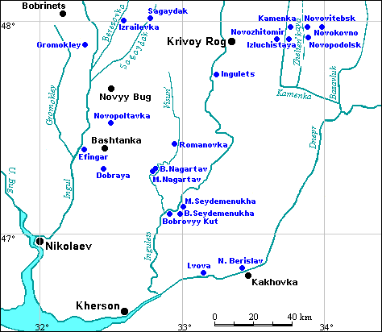
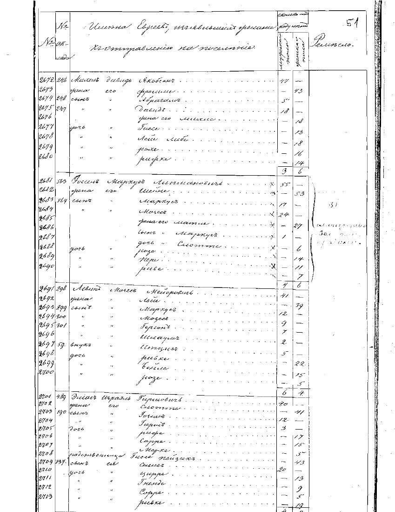
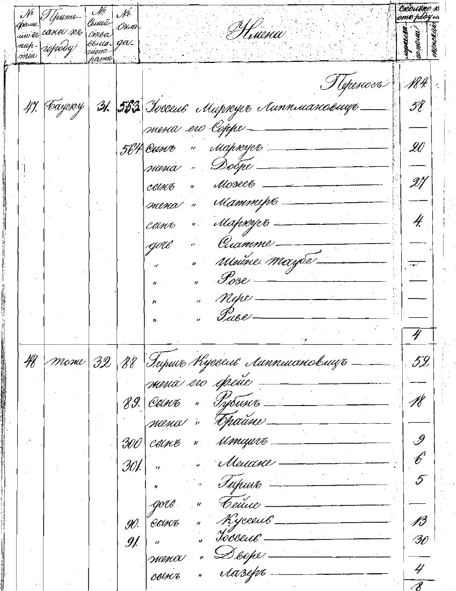

This database contains information about 5,872 Jews who relocated from towns in Courland to agricultural colonies in Kherson Gubernia in 1837 and 1840.
The documents were handwritten in Russian, and reference the years 1837 and 1840. The documents cover all the major towns in Courland Gubernia — Bausk, Friedrichstadt, Gazenpot, Goldingen, Grobin, Jakobshtat, Libava, Mitava, Pilten, Polangen, Tuckum, and Vindava. Unfortunately, these documents do not specify to which of the Kherson colonies these Jews relocated.
These records were photocopied by the Latvian National Archives (Latvijas Nacionālais Arhīvs) at the request of the JewishGen Ukraine SIG. The Latvian National Archives are located at Šķūņu Street 11, Rīga, LV-1050, Latvia. The records are all from Fond 412, Office of Courland Governor. To see the originals, please contact the archives directly — JewishGen does not have permission to circulate the copies.

In 1836 the Russian Czar issued an order granting land for colonization by Jews. The first requests came from Jewish families in Mitau in Courland, who wanted to settle in Ekaterinoslav Gubernia. Other Jews from Courland applied for land in Siberia. The latter never occurred. What did happen was that ultimately by 1845, Jews were settled in 15 agricultural colonies in Kherson Gubernia, and others in Ekaterinoslav Gubernia.
These lists for 1837 and 1840 are the only lists of this type which the Latvian National Archives has. Hence, no future work on this project is planned. It is probably that these two years were the years when the most applications were submitted for relocation.
There have been several articles printed in Avotaynu about the Kherson agricultural colonies, too numerous to mention here. In 2013, Martha Lev Zion (z”l) wrote in “History and Geography as Crucial Factors in Determining where to Look for Baltic-Area Archival Records — with Emphasis on Latvia” (Avotaynu, XXIX:3, Fall 2013) about the experience of Jews in Courland:
“A new law enacted in 1835 ruled that only those Jews who had been counted in the last census could be considered locals; all others would be expelled back to the Pale of Settlement. That law remained in effect almost the entire time that the Russians ruled Courland.
Although no deportations occurred, the Jews were encouraged, indeed pressured, to leave Courland to colonize new areas. About 341 families, 11 percent of the Jewish population of Courland, went south to “New Russia,” especially Kherson guberniya. Many who remained died in a cholera epidemic in 1848.”
Information about the Jewish Agricultural Colonies in Kherson Gubernia can be found at the "Jewish Agricultural Colonies" KehilaLinks site, particularly the pages on Kherson Colonies, Kherson - First Colonies, and the Agricultural Colonies List.
| Historic Name | Modern Name | 1837 | 1840 | Total |
|---|---|---|---|---|
| Bausk | Bauska | 994 | 683 | 1,677 |
| Friedrikstadt | Jaunjelgava | - | 10 | 10 |
| Gazenpot | Aizpute | 588 | 616 | 1,204 |
| Goldingen | Kuldīga | 377 | 175 | 552 |
| Grobin | Grobiņa | 15 | 15 | 30 |
| Jakobstadt | Jēkabpils | 76 | 63 | 139 |
| Libau | Liepāja | 73 | 77 | 150 |
| Mitau | Jelgava | 881 | 882 | 1,763 |
| Pilten | Piltene | 96 | - | 96 |
| Polangen | Palanga | 67 | - | 67 |
| Tukkum | Tukums | 33 | 11 | 44 |
| Vindava | Ventspils | 130 | 10 | 140 |
| Total Records | 3,330 | 2,542 | 5,872 | |
This database contains the following information for each individual:
Town — The place in Courland Gubernia from where the family moved (one of 12 towns, listed in the table on the right). The original document listed the German or Russian name of the town.
Year — Year of list. Either 1837 or 1840.
Name — The family surname and the given name(s) of each member of the household.
Comments — The comments may include:
Record number —
The line number on the original image
All family members are grouped together in the displayed output.
Two sample pages of the records are below — 1837 on the left, 1840 on the right:
 
Click on each image above for a larger view.
The column headings in the 1837 list are, from left to right:
1) Number. 2) Tax Number. 3) Names of Jews who are leaving. 4) Number of a) males and b) females. 5) Occupation.The column headings in the 1840 list are, from left to right:
1) Number of surname in the party. 2) Where registered. 3) Number of the family in the city council (magisterial) records.4) Number of the name. 5) Name. 6) Age.
The Project Director was Sylvia Walowitz; the records were translated from the Russian by Yana Golubitskiy and Pamela Lucas; and the data was proofread by Lisa Wanderman, Lara Diamond, Janette Silverman. This introduction was edited by Warren Blatt.
The "Courland-Kherson Jewish Relocation Database" can be searched via both the JewishGen Latvia Database and the JewishGen Ukraine Database.
| JewishGen Ukraine Database | JewishGen Latvia Database |
{kind=link}
{kind=link}